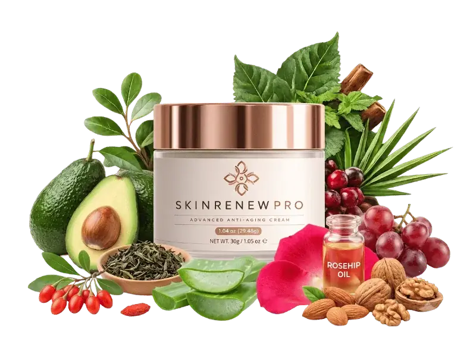
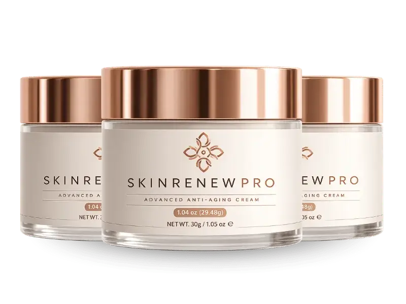
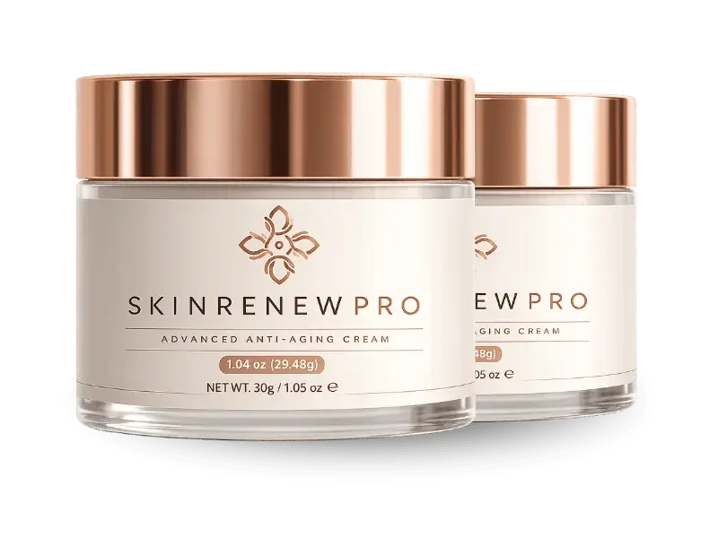
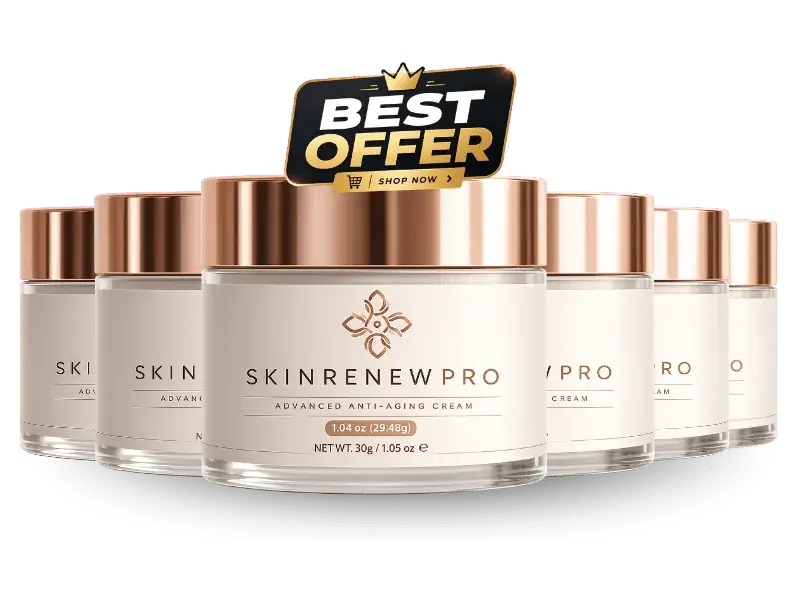
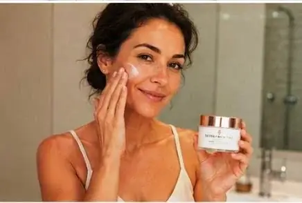

Cosmetic night cream · 1.04 oz jar · Adults 18+ · Patch test first
SkinRenew Pro: A Nightly Botanical Cream Marketed To Support Hydration And A More Radiant-Looking Complexion
SkinRenew Pro is a night cream for adults who want a calm, moisturizing step after cleansing. You smooth a pea-sized amount over your face and neck in upward circles, and leave it to absorb overnight. The seller presents it as an anti-aging cream for softer, smoother, more radiant-looking skin, and the page promises changes in tone, firmness and dark spots over weeks. We read that more carefully: it is a cosmetic moisturizer with plant extracts, not a treatment, no study of the cream is shown, and it contains nut-derived ingredients. A daily sunscreen does far more for aging skin, and a new or changing dark spot should be checked by a doctor. This page explains the ingredients, what the label leaves out, the three jar prices and how the 60-day email refund works.*
- One pea-sized amount a night, after cleansing
- Eight named plant ingredients to read one by one
- Free shipping on 3 and 6 jars
- A 60-day money-back guarantee, by email
- 1Patch testa small dab, 48 hours
- 2Cleanseyour face at night
- 3Smooth ona pea-sized amount
- 4Protectwith SPF 30+ by day
| Allergic to tree nuts? | Do not use |
| A new or changing dark spot? | See a doctor first |
| Eczema, rosacea or sensitive skin? | Ask first |
Secured payment • Encrypted checkout • 60-day guarantee
Related: Skin claims we skip · FAQ · The blog
*SkinRenew Pro is a cosmetic skincare product. These statements have not been evaluated by the Food and Drug Administration. It is not intended to diagnose, treat, cure or prevent any disease or skin condition.

An animated teaching sketch, not data. Illustration.
At A Glance
What The SkinRenew Pro Seller Says About Quality
These are the seller's statements, reported as stated.

Made In The USA
The page says Aurora, Colorado.
GMP Practice
Good Manufacturing Practice, per the brand.
- Plant-based actives
Eight Named Plants
The seller's wording; the base is not listed.
- FDA registered site
Facility Note
Cosmetics are not FDA approved.
No "FDA approved" or "100% natural" seal appears here: cosmetics are not FDA approved, and the base and preservatives are not listed. See the quick answers and label gaps to know.
Patch test first, then read the checkout.
60-day guarantee · Buying checklist · Jar prices
What Is It
What Is SkinRenew Pro, As Shown On The Jar And Page?
SkinRenew Pro comes in a cream-white jar with a copper lid, 1.04 oz (29.48 g), labelled "Advanced Anti-Aging Cream".*
The seller names eight plant ingredients, rosehip oil, grapeseed and resveratrol, sweet almond extract, shea butter, goji berry, sage leaf extract, aloe vera leaf juice and green tea extract, with no amounts, and does not list the water, emulsifiers, preservatives or fragrance.
It is a cosmetic for adults: not a drug, not FDA approved and not a treatment for wrinkles, dark spots or any skin condition.
Related: The eight botanicals · What creams can do · Label gaps
Read The Ingredients
Seller artwork, as supplied.
Pricing
SkinRenew Pro Prices: From $49 A Jar
Three packs, with free shipping on the larger two.
Starter

- About 60 days at a jar a month
- + shipping
- 60-day guarantee, by email
Popular
- About 90 days at a jar a month
- Free shipping
- 60-day guarantee, by email
Best Value

- About 180 days at a jar a month
- Free shipping
- 60-day guarantee, by email
Against $79 jars, three jars save $10 each and six save $30 each. The seller also strikes through $358, $537 and $1,074, prints "You save $200 / $330 / $780" and a "$179 per jar" regular price, none of which anyone is shown paying, so we leave them out. It calls 2 jars a "30-day supply" and 3 jars a "90-day supply", which does not add up, so we count a jar as about 30 days. Jar prices · Buying checklist · Shipping info
Sixty Days
SkinRenew Pro's 60-Day Money-Back Guarantee, By Email
The seller advertises a full 60-day money-back guarantee. You email its support within 60 days of purchase, and it says no jars need to be returned.
Note the purchase date and set a reminder around day 45. If your skin reacts, stop and say so in the same email. See the refund policy and the sixty-day refund steps.
Check A Pack With A Guarantee The steps in detail →Shipping And Ordering
Ordering SkinRenew Pro: Shipping, Payment And What To Check
No bonus items are mentioned for this product.
- Free shipping on 3 and 6 jars; shipping is added on 2 jars, in an amount the page does not show
- A one-time purchase with no auto-billing, per the seller
- Check the ingredient (INCI) list on your own jar, above all for allergies
- Confirm the pack, total and guarantee terms on the checkout page
See shipping info, jar prices and the buying checklist.
Related: Shipping info · Refund policy · Pregnancy and teens
How It Works
How SkinRenew Pro Is Meant To Be Used: A Pea-Sized Amount Each Night
The seller says to apply it nightly after cleansing, massaging a pea-sized amount over face and neck in upward circles and letting it absorb before sleep.*
- Patch test a small dab on the inner arm for 48 hours.
- Cleanse your face gently at night.
- Smooth on a pea-sized amount over face and neck.
- Use SPF 30 or higher every morning.
- Decide inside the 60-day window.
Related: The nightly routine · Patch test first · Sunscreen and retinoids
One cream inside a skin-care day. Illustration.
The seller's "how it works" graphic says the formula is "backed by science" and shows "visible results". No study of the cream is shown, so that graphic is left out. Why →
Ingredients
Inside SkinRenew Pro: Eight Botanicals, No Amounts
What each is and what to watch for. The botanicals in detail →
The List At A Glance
Eight names, no numbers, and an unlisted base.
| SkinRenew Pro, as the seller lists it | Detail |
|---|---|
| Product type | Cosmetic anti-aging night cream |
| Size | 1.04 oz (29.48 g) jar |
| Rosehip oil (Rosa canina) | Amount not given |
| Grapeseed and resveratrol | Amount not given |
| Sweet almond extract | Amount not given |
| Shea butter (Butyrospermum parkii) | Amount not given |
| Goji berry (wolfberry) | Amount not given |
| Sage leaf extract (Salvia officinalis) | Amount not given |
| Aloe vera leaf juice | Amount not given |
| Green tea extract | Amount not given |
| Water, emulsifiers, preservatives, fragrance | Not listed on the seller's page |
How to read it: eight plant ingredients are named, with no amounts and no order of concentration. A cream also contains water, emulsifiers and preservatives, which the page does not list. The seller says "every ingredient is printed on the label"; the full ingredient (INCI) list on your own jar is the final word, above all for allergies.
Directions (seller): apply nightly after cleansing, a pea-sized amount over face and neck in upward circles. Patch test on the inner wrist before first use. Mainly for night, or as a morning base with SPF over it.
General evidence. Illustration.
A fair summary: daily sunscreen and prescription retinoids have the best evidence for aging skin, moisturizers help dry skin, plant antioxidants have limited evidence, and no trial of this cream is shown.* See the blog on rosehip oil, resveratrol, shea and almond and aloe.
Nut allergy, eczema or rosacea? Ask first.
Honest information first · Nut and plant allergies · Sensitive skin
Safety
SkinRenew Pro Safety: Patch Tests, Nut Allergy, Dark Spots And Sun
Six reasons to ask first.
Patch Test First
Plant extracts and nut-derived ingredients can cause reactions, so test a small dab first and stop at any redness, itching or swelling. See patch test first and nut and plant allergies.
Illustration.
Illustration.
A Cream Is Not A Skin Check
A new or changing dark spot needs a doctor. See dark spots, check first.
| If you | Then |
|---|---|
| Are allergic to tree nuts | Do not use. See nut and plant allergies. |
| Have a new or changing dark spot | See a doctor first. See dark spots. |
| Have eczema, rosacea or acne-prone skin | Ask first. See sensitive skin. |
| Are pregnant, nursing or under 18 | Ask a doctor first. See pregnancy, teens, conditions. |
| See redness, itching or a rash after use | Stop. See patch test first. |
| Have facial swelling or trouble breathing | Seek emergency care at once. |
Sun Protection Matters More
Sunlight causes most visible aging. Use broad-spectrum SPF 30 or higher daily. See sun protection first.
Keep It Away From Eyes
Do not apply it on or inside the eye area unless the jar says it is safe to, and rinse with water if it gets in the eyes.
Illustration.
Benefits
What SkinRenew Pro Aims To Support, And Where It Stops
Goals, never promises. The skin goals →
A trial window
A 60-day money-back guarantee.
Illustrative emphasis, not measured.
Sunscreen Carries The Weight
A daily SPF and, where advised, a prescription retinoid do far more for aging skin than any night cream. See what SkinRenew Pro aims to support and what anti-aging creams can do.
Choose Your Pack
Comparing SkinRenew Pro Packs By Cost Per Day
The lowest per-jar price, $49, is on the six jar pack.
Starter
- About 60 days at a jar a month
- + shipping
- 60-day guarantee, by email
Popular
- About 90 days at a jar a month
- Free shipping
- 60-day guarantee, by email
Best Value
- About 180 days at a jar a month
- Free shipping
- 60-day guarantee, by email
Cost per day. Illustration.
The Sums
Two jars are $158 plus shipping, three are $207 and six are $294, with free shipping on the last two. At the seller's jar-a-month pace that is about $2.63, $2.30 and $1.63 a day. See jar prices.
Start Small If Unsure
Do not buy six jars of a cream you have not patch tested. Start with two, and use the refund window if it is not for you. See the buying checklist and the refund steps.
Sixty days. Illustration.
Customer Reviews
SkinRenew Pro Customer Reviews: Questions And Honest Answers
Individual buyers cannot be verified, so no star ratings, counts or named testimonials appear here, and the portraits supplied are illustrative images only. The seller's page prints three five-star stories with names and cities (Sandra R., Diane W., Teresa K.), one describing "dark spots fading", and itself says its comments are not independently verified, so we do not repeat them. Verified reviews will be added when they can be shown in full, critical ones included.

Illustrative image, not a customer.
Will it fade my dark spots?
No claim like that is supported. A moisturizer can make skin look smoother, and a new or changing dark spot should be checked by a doctor. We do not repeat the seller's "spots fading" story.
Illustrative image, not a customer.
I have a tree-nut allergy. Is it safe?
No. It contains sweet almond extract and shea butter, which are nut-derived. Ask an allergist first, and patch test any new cream.
Illustrative image, not a customer.
Can it replace my sunscreen?
No. A daily SPF 30 or higher does the most for aging skin, and the cream is at most a moisturizing extra at night.
Send yours
Used SkinRenew Pro? Email contact@skinrenewpro.com with your order number and an honest account, kind or critical. Verified reviews can appear here.
Common questions
Allergies, dark spots, the label and refunds. See the quick answers.
Solid facts
The ingredients, the prices and the refund steps are spelled out here and in the blog.
Questions
SkinRenew Pro Questions, Answered Carefully
What is SkinRenew Pro?
A cosmetic anti-aging night cream in a 1.04 oz (29.48 g) jar, built around eight named plant ingredients.
What is inside?
Rosehip oil, grapeseed and resveratrol, sweet almond extract, shea butter, goji berry, sage leaf extract, aloe vera leaf juice and green tea extract, per the seller.
Are the amounts listed?
No. No amount is given, and the water, emulsifiers, preservatives and fragrance are not listed on the seller's page.
How do I use it?
Nightly after cleansing, a pea-sized amount over face and neck. Patch test first.
Will it fade dark spots or firm my skin?
We cannot support that. It is a moisturizer with plant extracts, and no study of the cream is shown.
Is it safe with a nut allergy?
No. It contains sweet almond extract and shea butter, which come from nuts. Ask an allergist first.
Can I use it with eczema or rosacea?
Ask a dermatologist first and patch test. It does not treat either condition.
Is it FDA approved?
No. Cosmetics are not. The seller only says it is made in a GMP-certified, FDA-registered facility.
What does it cost?
$79, $69 or $49 a jar for 2, 3 or 6 jars: $158 plus shipping, $207 or $294.
Is it a subscription?
The seller says no: a one-time purchase with no auto-billing.
How does the guarantee work?
60 days from purchase: email support for a refund, and the seller says no jars need to be returned.
When should I see a dermatologist?
For any new, changing or irregular dark spot, a sore that will not heal, or a rash that lasts or spreads.
From The Blog
The SkinRenew Pro Notebook: Ten Linked Entries
What anti-aging creams can do, each botanical and what works.
What Anti-Aging Creams Can And Cannot Do
Mostly moisturizers.
IngredientsRosehip Oil For Skin
Small studies.
IngredientsResveratrol And Grapeseed
Hard to deliver.
IngredientsShea Butter And Sweet Almond
And nut allergy.
IngredientsGreen Tea Extract On Skin
Not a sunscreen.
IngredientsGoji Berry And Skin
Little evidence.
IngredientsSage Extract On Skin
Lab claims.
IngredientsAloe Vera On Skin
A mild soother.
What worksSunscreen, Retinoids And What Works
Proven habits.
ClaimsHow To Judge Skincare Claims
Four questions.
Ready When You Are
Patch Test First, Then Choose SkinRenew Pro
A pea-sized amount each night, eight named plant ingredients and a 60-day money-back guarantee, from $49 a jar on the six jar pack. Order once you have checked for nut and plant allergies, had any changing dark spot looked at and set up a daily sunscreen. See the buying checklist and jar prices.
- Contains nut-derived ingredients
- The base is not listed
- No trial of the cream is shown
- No promise of results
The Details
The SkinRenew Pro Details, As The Seller Lists Them
Eight botanicals, no amounts. Label gaps →
| SkinRenew Pro, as the seller lists it | Detail |
|---|---|
| Product type | Cosmetic anti-aging night cream |
| Size | 1.04 oz (29.48 g) jar |
| Rosehip oil (Rosa canina) | Amount not given |
| Grapeseed and resveratrol | Amount not given |
| Sweet almond extract | Amount not given |
| Shea butter (Butyrospermum parkii) | Amount not given |
| Goji berry (wolfberry) | Amount not given |
| Sage leaf extract (Salvia officinalis) | Amount not given |
| Aloe vera leaf juice | Amount not given |
| Green tea extract | Amount not given |
| Water, emulsifiers, preservatives, fragrance | Not listed on the seller's page |
How to read it: eight plant ingredients are named, with no amounts and no order of concentration. A cream also contains water, emulsifiers and preservatives, which the page does not list. The seller says "every ingredient is printed on the label"; the full ingredient (INCI) list on your own jar is the final word, above all for allergies.
Directions (seller): apply nightly after cleansing, a pea-sized amount over face and neck in upward circles. Patch test on the inner wrist before first use. Mainly for night, or as a morning base with SPF over it.
A cosmetic cannot be FDA approved. Read the ingredient list and warnings on your own jar, and see the health disclaimer.
References
Independent Reading For SkinRenew Pro Shoppers
None of them tested SkinRenew Pro itself. Our blog digs into each part →
These organizations do not endorse, sponsor or have any affiliation with SkinRenew Pro or this website. See also the health disclaimer.